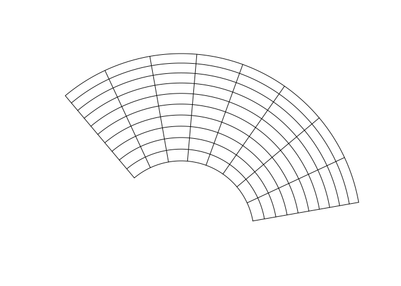
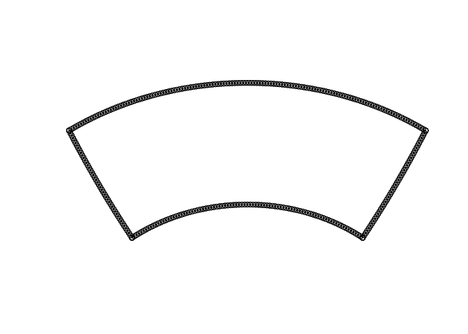
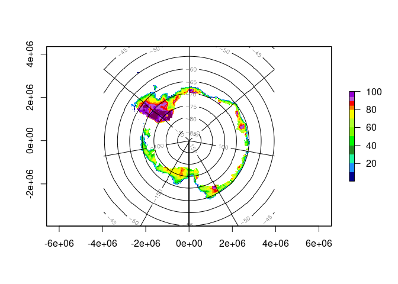
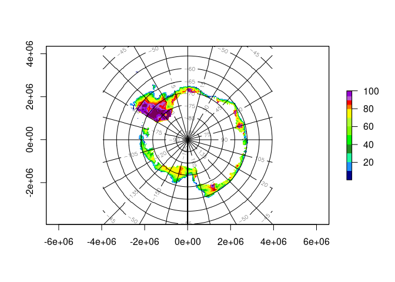
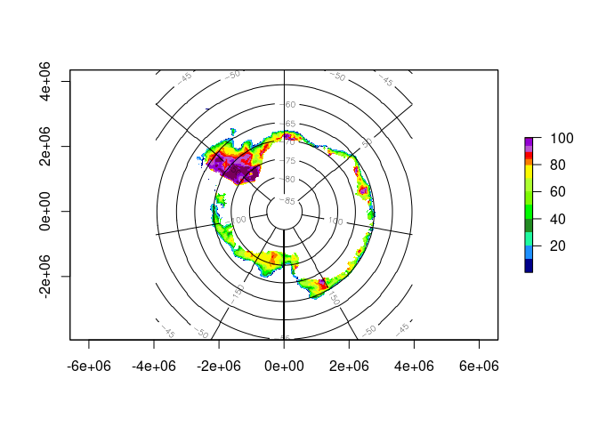

Graticules are the longitude latitude lines shown on a projected map, and defining and drawing these lines is not easy to automate. The graticule package provides the tools to create and draw these lines by explicit specification by the user. This provides a good compromise between high-level automation and the flexibility to drive the low level details as needed, using base graphics in R.
Installation
You can install the released version of graticule from CRAN with:
install.packages("graticule")And the development version from GitHub with:
# install.packages("devtools")
devtools::install_github("hypertidy/graticule")Example
This is a basic example which shows how to create a graticule at specific longitude and latitude spacings and in a given projection.
library(graticule)
#> Loading required package: sp
grat <- graticule(lons = seq(100, 220, by = 15), lats = seq(-60, -10, by = 5), proj = "+proj=laea +lon_0=140 +lat_0=-90 +datum=WGS84")
plot(grat)
There is an automatic segmentation that is done at equal distances along these rhumb lines. This is not an ideal spacing but is an improvement on the common alternatives, and is easier to work with when you need fine control.
If your projection is not wildly warped in most areas then the default rhumb line segmentation is the best first step.
plot(as(grat, "SpatialPoints"))This also allows the common case of creating a sensible single polygon wedge, i.e.
wedge <- graticule(lons = c(-40, 40), lats = c(-60, -40), proj = "+proj=laea +lat_0=-50 +lon_0=0 +x_0=0 +y_0=0 +datum=WGS84 +units=m +no_defs")
plot(wedge)
points(as(wedge, "SpatialPoints"))
Quick and dirty plot
Give it a raster and let it plot, can provide levels as per contour (values of longitude or latitude to draw as lines), and separate longitude or latitude plot on their own.
Sometimes it’s enough, sometimes we can muck around to get what we want.
tfile <- system.file("extdata", "nt_20140320_f17_v01_s.bin", package = "graticule", mustWork = TRUE)
ice <- raster::raster(tfile)
ice[!ice > 0] <- NA
raster::plot(ice, col = palr::ice_pal(100))
lonlat(ice)
raster::plot(ice, col = palr::ice_pal(100))
lonlat(ice, lon = TRUE, levels = seq(-180, 165, by = 15))
lonlat(ice, lat = TRUE, levels = seq(-85, -40, by = 5))
## not much good so let's get the actual arrays
lon <- lonlat(ice, plot = FALSE)[[1]]
lat <- lonlat(ice, plot = FALSE)[[2]]
lon[lat < -85] <- NA
raster::plot(ice, col = palr::ice_pal(100))
raster::contour(lon, add = TRUE)
lonlat(ice, lat = TRUE, levels = seq(-85, -40, by = 5))
Known Issues
Please feel free to share your experiences and report problems at https://github.com/hypertidy/graticule/issues
- general problems with segmentation, this is not done smartly yet (see hypertidy/bigcurve or the s2 package)
- There’s work needed for when
graticule_labels()are created without usingxline/yline, need more careful separation between generating every combination in the grid versus single lines
Please note that the ‘graticule’ project is released with a Contributor Code of Conduct. By contributing to this project, you agree to abide by its terms.